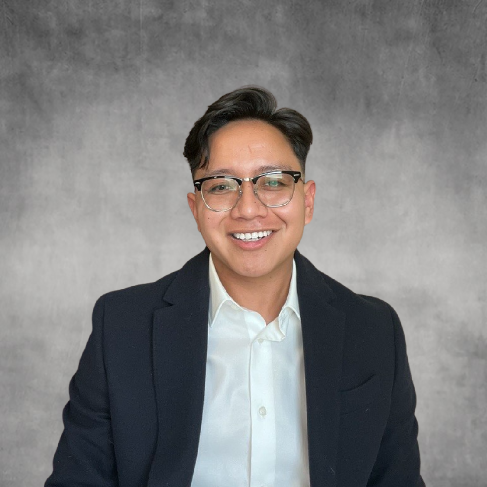

Hi! My name is Abdias Tellez.
I pursued Computer Science and Engineering at UC Merced, graduating in December 2022. During my free time, I enjoy playing basketball (go Lakers!), hiking, running long distances, and engaging in various computer science projects. Here are highlights from my computer science experiences!